01 / From product dimensions to process requirements
From product dimensions to process requirements
Cold extrusion forms a billet by applying compressive force through a punch-and-die arrangement. ExtruCAD brings the associated engineering calculations into a single interface, so a selected product and material can be evaluated with consistent dimensional inputs.
The project focuses on press tonnage, forces acting on the workpiece, initial billet diameter and height, and the corresponding die assembly. Its calculation model uses idealized extrusion relationships and conservation of volume.

02 / Products, materials and inputs
Products, materials and inputs
The user supplies a product type, a material and the final product dimensions. The interface displays the drawing associated with that product so the dimensional labels can be interpreted before calculation.
| Configuration |
|---|
| CAN |
| CAN–CAN |
| ROD |
| ROD–ROD |
Material library
The original program includes the following eleven material options.
- Al 99.5–99.8
- AlMgSi 1
- CuZn 37 (Ms63)
- Ck10
- Ck15
- Ck 45 / Cq 45
- Cq 22
- Cq 35
- 16 MnCr 5
- 42 CrMo 4
- 15 CrNi 6
03 / The calculation model
The calculation model
The figures below retain the original notation and equations. They cover the geometry, principal strain, extrusion force, deformation efficiency and permissible strain used by the program.
Notation and strain

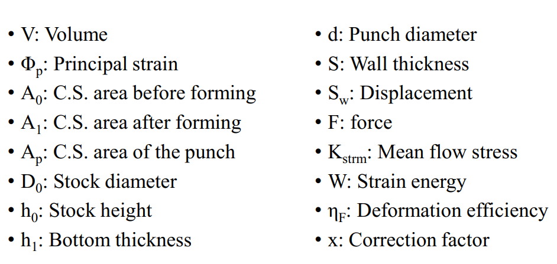

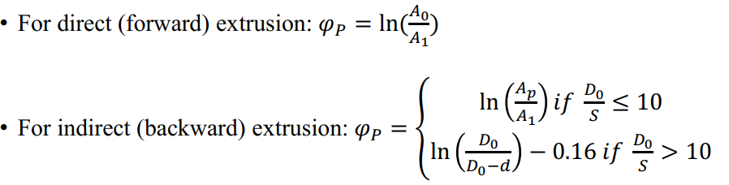
Forces and deformation efficiency

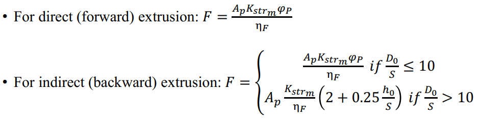

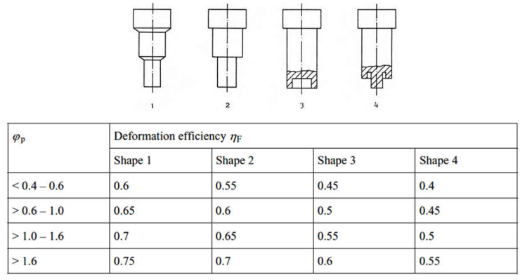

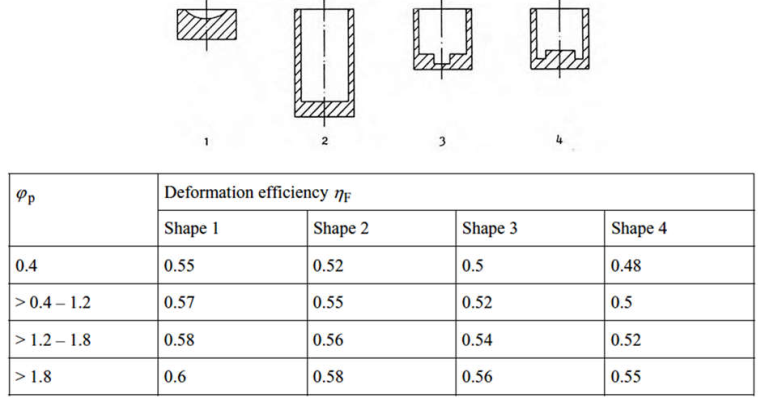

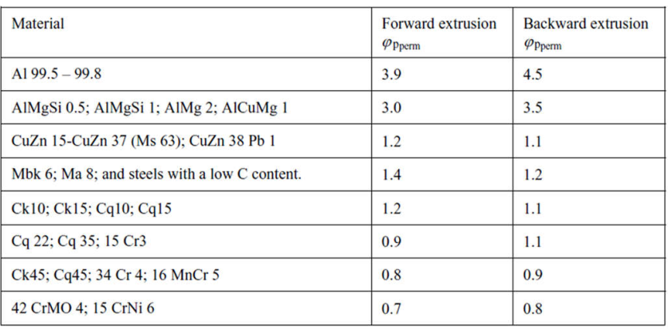
04 / Working through an example
Working through an example
The original walkthrough uses a CAN product and an Al 99.8 selection. The example dimensions are a = 50 mm, b = 40 mm, c = 20 mm and d = 5 mm.
1. Select the product and material

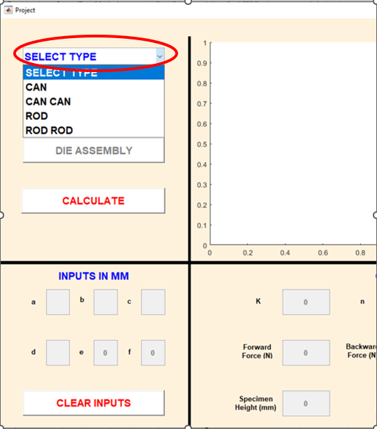

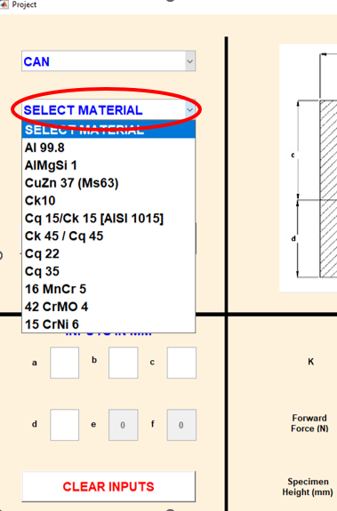
2. Enter the final dimensions
Use the labels in the product drawing to map each dimension to the correct field. Inputs in the interface are expressed in millimetres.

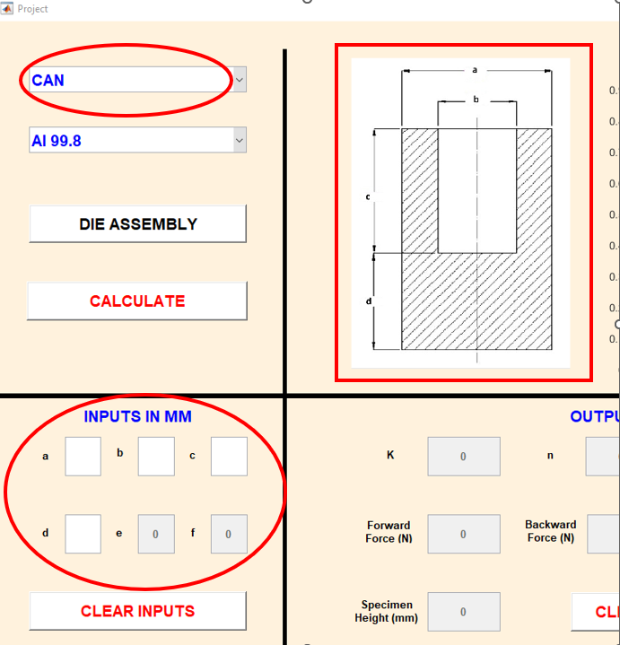
3. Calculate and inspect the output
Select CALCULATE to populate the output fields.

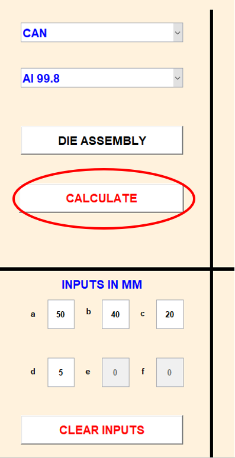
05 / Outputs and die assembly
Outputs and die assembly
The result panel brings together material parameters, machine capacity, forward and backward forces, and the starting specimen dimensions. In the illustrated CAN example, the original output reports zero forward force and presents the backward-extrusion result.

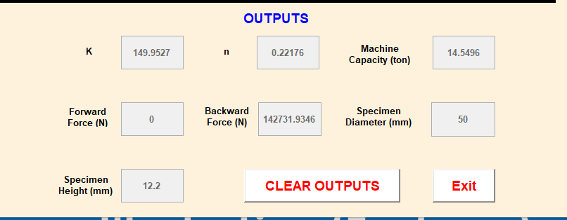
Inspect the die arrangement
The DIE ASSEMBLY control displays a sketch corresponding to the chosen product.

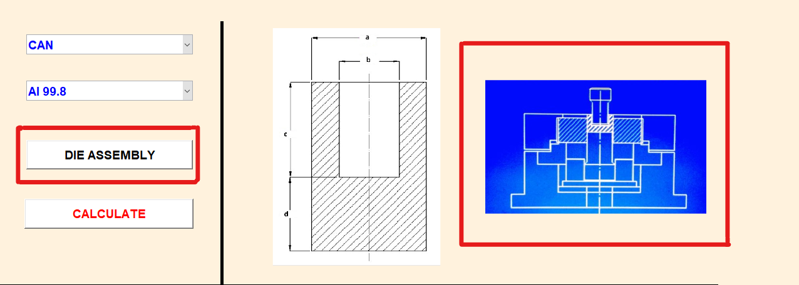
Finish the session
Use the Exit control after reviewing the calculation.

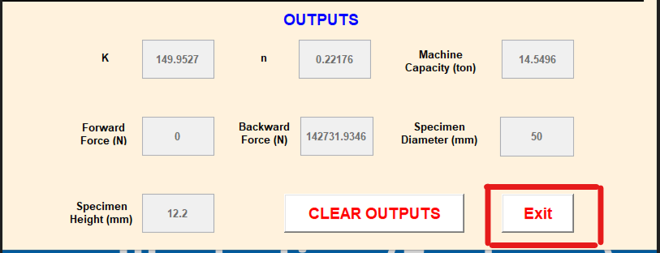
06 / What the project demonstrates
What the project demonstrates
ExtruCAD connects a set of engineering equations to a practical selection-and-calculation workflow. The product drawing, material choice and numerical outputs are presented together, making the calculation easier to inspect and repeat.
The screenshots document the original MATLAB implementation. They illustrate its workflow and model outputs; this report does not present a new experimental validation of press loading or production performance.